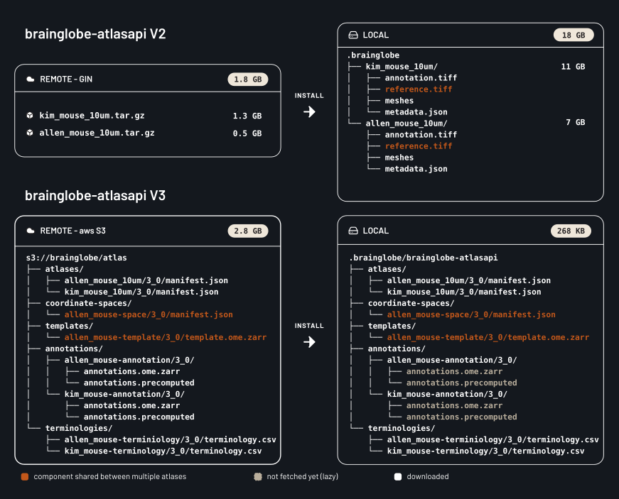
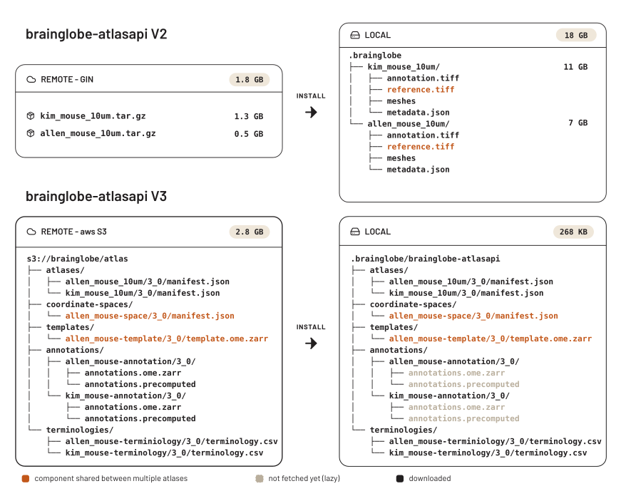

brainglobe-atlasapi V3 pre-release#
A pre-release version of brainglobe-atlasapi V3 is now available. You can install it using by running:
pip install brainglobe-atlasapi --pre
Please try it in your tools and workflows, in a fresh environment if possible, and report any issues you encounter on either Zulip or GitHub.
New file formats and storage#
The most significant change is how atlases are stored on disk. Previously, each atlas was a single package, including reference.tiff, annotation.tiff, hemispheres.tiff files, a structures.json and a meshes/ folder, bundled together and downloaded from GIN as one monolithic archive.
V3 moves image data to OME-Zarr, a chunked, pyramidal, cloud-native format, and stores everything on AWS S3. Further, an atlas is no longer a monolithic bundle. It’s now assembled from independently versioned components: templates, annotation sets, coordinate spaces and terminologies. Each of these can be shared between atlases and updated on its own. The directory structure is based on the Atlas Asset Organization from the Allen Institute.


Figure 1. An example of the local and remote directory structure for brainglobe-atlasapi V2 and V3.
Importantly, installing an atlas no longer downloads all components up front. The meshes, template, and annotations are fetched from S3 the first time you access them. That means faster instantiation and a much smaller footprint on disk than the previous monolithic atlases. This also allows the components to be streamed to online viewers such as neuroglancer.
What do I need to do?#
Ideally, nothing! The Python API is unchanged. You will need to update the atlases you have stored on disk the first time you run your pipelines, but this will happen automatically, as brainglobe-atlasapi V3 is not compatible with the previous atlas format. As the old files are no longer used, they can be safely removed. For example, ~/.brainglobe/allen_mouse_25um can be deleted.
One small note: atlas.reference is now a deprecated alias for atlas.template. It will continue working, but prints a warning and will be removed in a future version.